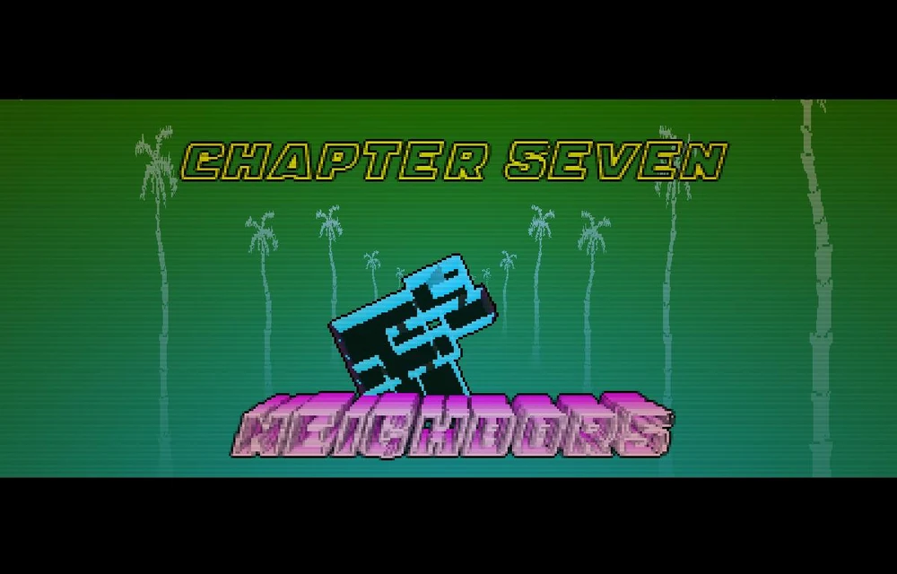
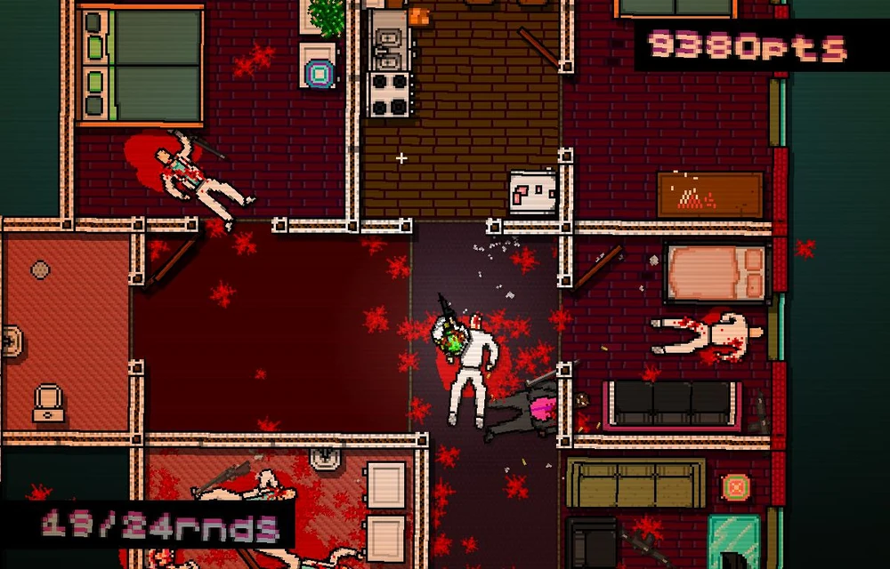
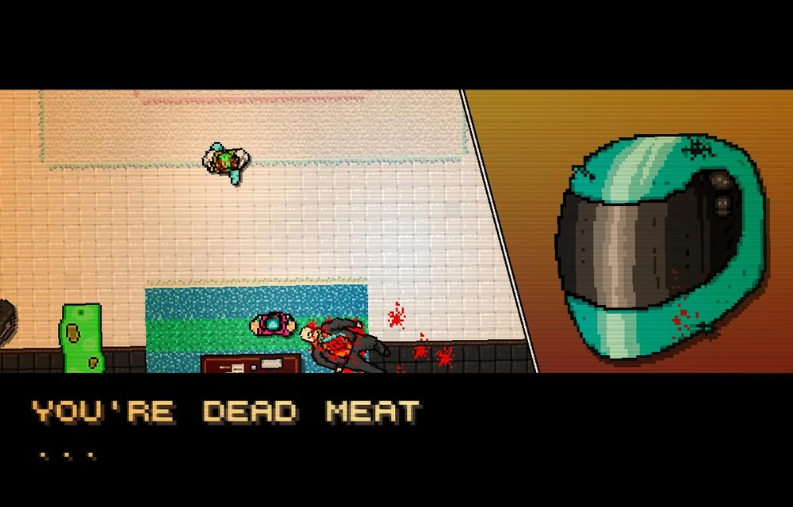

Objetivo
o primeiro capítulo a ter Capangas como inimigos comuns. Os Capangas só podem ser derrotados com disparos de arma de fogo e são imunes a todas as tentativas de derrubada. A combinação de Capangas que só morrem com tiros, cães que atacam rapidamente e mafiosos que correm até o local dos disparos pode tornar este nível bastante difícil se o jogador não planejar seu ataque com antecedência. Após terminar seu serviço você recebera outra ligação para um novo trabalho, impedir um desertor de sua organização... Ao chegar no local você encontra Biker, seu primeiro desafio.
- Dificuldade: Difícil
- Chefe: Biker
- Estratégia: Desvie dos arremessos de faca e ataque com o taco de golfe.
Galeria da Missão

